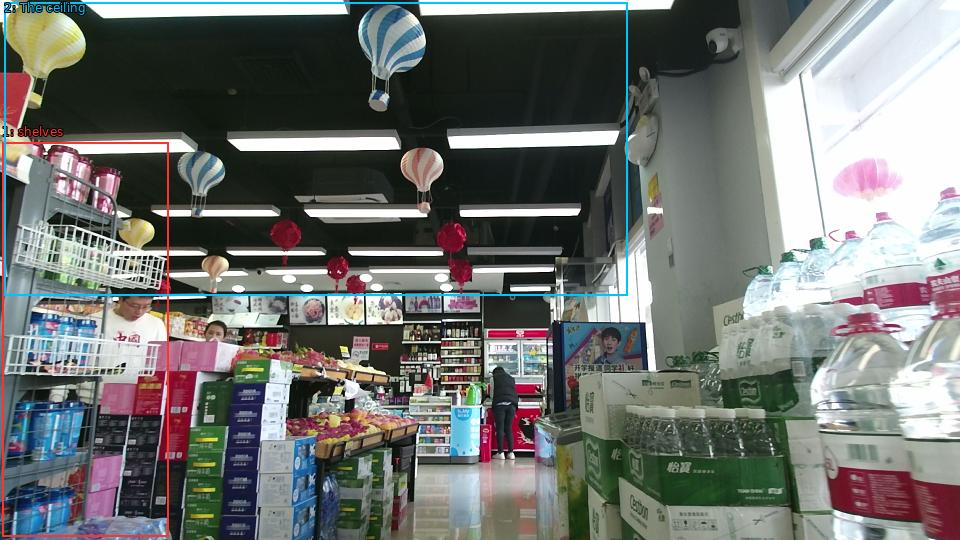

The image shows the interior of a supermarket aisle. The aisle is filled with various items such as bottles of water, boxes of snacks, and other grocery items. On the left side of the aisle, there are shelves stocked with snacks and drinks. In the background, there is a counter with more items. The ceiling is decorated with colorful paper lanterns in the shape of hot air balloons. The overall atmosphere of the store is bright and cheerful.

Original · Caption raw · Grounding raw · Koordinate
Številke so lokalni ID regije. Dolge slikovne oznake so skrajšane; spodaj so celotne fraze. Napovedane regije se lahko prekrivajo ali opisujejo skupine.
| ID | Celotna fraza | bbox xyxy |
|---|---|---|
| 1 | shelves | [2.3999998569488525, 142.29000854492188, 168.47999572753906, 536.4900512695312] |
| 2 | The ceiling | [4.319999694824219, 2.9700000286102295, 627.3599853515625, 295.6500244140625] |